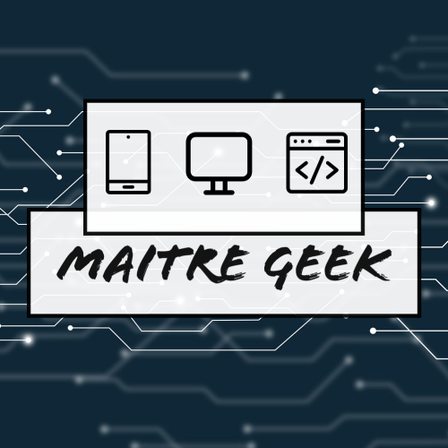

Autodidacte en informatique, j'ai appris seul à me servir d'un ordinateur. Puis d'un téléphone mobile. Passionné par les mises à jour de ces derniers, je me tiens au courant des toutes dernières avancées technologiques. Dernièrement, j'ai pu concevoir un site internet avec la plateforme WIX. J’ai pris plaisir à concevoir ce site et à le rendre vivant au quotidien tout en respectant les demandes qui me sont formulées. La version mobile est tout aussi efficace que la version ordinateur. J’ai conscience que la création d’un site internet via la plateforme WIX n’est pas du code au sens propre, mais cela demande certaines compétences informatiques notamment sur la mise en page et la compréhension des différentes interactions entre les pages. Également passionné par la domotique, j'utilise les objets connectés dans mon quotidien à la maison. La mise en place de routines pour automatiser certaines taches du quotidien a facilité mon organisation. J'utilise également toutes sortes de logiciels pour les retouches photos ou montage vidéo, dans un but purement personnel. Je suis à l'aise avec un ordinateur, quel que soit son système d'exploitation.
Après un BEP métier de la comptabilité, j’ai eu l’opportunité de rentrer dans la Police Nationale. Dans un premier temps affecté aux archives du commissariat de Valence. Ma curiosité m’a poussé à aller vers mes collègues des groupes d’enquêtes de la Sûreté Départementale afin d'en apprendre plus sur leurs missions quotidiennes. J’ai ainsi intégré la Brigade des Mineurs. J’avais 19 ans à l’époque. Cette jeunesse était un atout pour établir une relation de confiance avec certains fugueurs. La Commissaire, voyant dans cette relation une opportunité, m’a ainsi chargé de dynamiser et de réaliser un suivi des jeunes fugueurs. Ce suivi était, à l’époque, au format papier. J’ai informatisé ce suivi, pour que tout le commissariat puisse y avoir accès au quotidien et notamment pendant les services de nuit. Par la suite, j’ai pu utiliser mes connaissances en informatique dans diverses unités d’enquêtes. La plus valorisante à ce jour pour moi, fut la découverte de 6 000 images pédopornographique dans un ordinateur. Il s’agissait de la seule preuve pour incriminer le mis en cause. Après 6 ans dans la Police Nationale, je me suis orienté vers le métier d’ASCT chez SNCF. J’intègre la résidence TER de Valence, où je m’épanouis professionnellement. J’apprend que OUIGO est en recherche de personnel. Ce nouveau produit me plaît et c’est ainsi que je rejoins la résidence de Lyon St Exupery en 2017. J'apprécie mon poste au sein de SNCF Voyages, et un changement d'orientation me permettra de conserver mon dynamisme professionnel et mon épanouissement